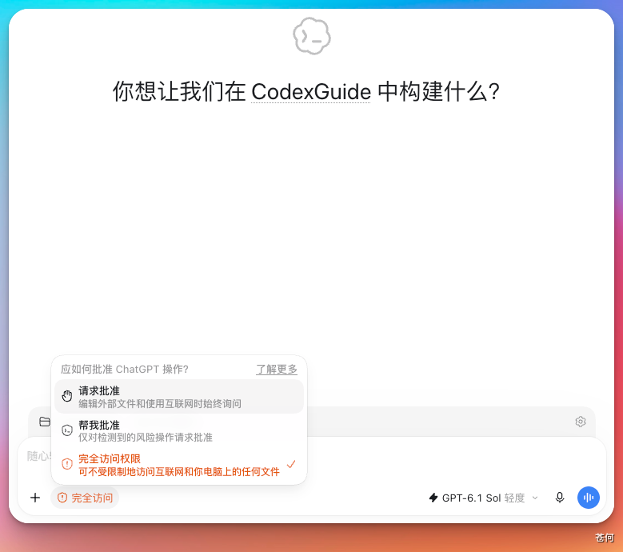
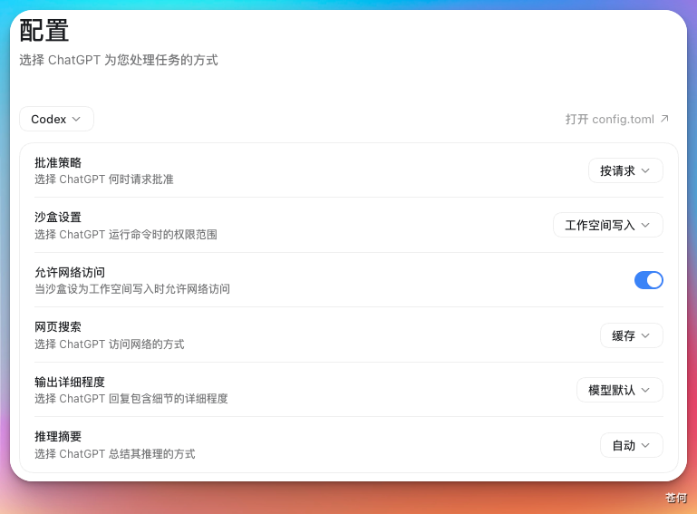

权限决定了 Codex 能做什么，例如可以读取或修改哪些文件、运行哪些命令，以及是否能够访问网络。过去这些限制主要通过沙盒（Sandbox）配置；现在 Codex 又提供了更细致的 Permission Profiles（权限档案），可以分别控制文件和网络权限。
因此，目前有新旧两种配置方式：
- 权限档案：使用
default_permissions和[permissions]，功能更细致，但仍处于 Beta 阶段。 - 传统沙盒配置：使用
sandbox_mode、approval_policy和[sandbox_workspace_write]。
不要把两种方式写在同一套配置中。只要 Codex 在任意配置层或命令行参数中发现 sandbox_mode，就会优先采用传统沙盒配置，default_permissions 不会生效。
权限选择器#
在 CLI 中输入 /permissions 可以打开权限选择器；IDE 扩展通常在输入框下方提供权限控件。根据客户端版本、配置和组织策略，菜单可能包含：
Ask for approval（请求批准）Approve for me（替我审批）Full access（完全访问）- 命名或自定义权限档案

对于 CLI 而言，权限配置的细粒度和复杂度都会更高。这里不做展开。
请求批准#
在这个模式下，Codex 可以读取和修改当前工作区里的文件，也可以运行常规的本地命令。如果操作超出工作区、需要访问受限网络，或涉及其他敏感权限，Codex 会先暂停任务，请你确认后再继续。
它适合大多数本地开发任务。在传统沙盒配置中，对应的设置是：
sandbox_mode = "workspace-write"
approval_policy = "on-request"
approvals_reviewer = "user"这里的“工作区”不一定只有你打开的文件夹，还可能包含 /tmp 等临时目录。输入 /status，可以查看 Codex 当前能够访问和写入的具体范围。
即使处于 workspace-write 模式，下面几个目录仍会受到保护，只能读取、不能修改：
.git.agents.codex
Codex 还会根据项目情况推荐合适的权限。打开受 Git 管理的项目时，通常会推荐 Auto，也就是允许修改工作区，但越界操作需要审批；如果目录没有版本控制，或尚未被信任，Codex 通常会先以只读模式运行。
适用场景：
- 修改文档、样式、测试或小范围代码。
- 第一次打开或尚不熟悉的项目。
- 对安全性要求较高，希望亲自确认敏感操作的项目。
替我审批#
Approve for me 可以理解为“让 Codex 替你审批”。它的文件和网络权限与“请求批准”模式相同，区别在于：遇到需要审批的操作时，Codex 会先交给自动审核代理判断，而不是每次都弹窗询问你。
在传统沙盒配置中，对应的设置是：
sandbox_mode = "workspace-write"
approval_policy = "on-request"
approvals_reviewer = "auto_review"自动审核不会给 Codex 增加额外权限。工作区内原本允许的操作会照常执行；只有原本需要你确认的操作，才会交给自动审核代理，例如访问受限网络、申请更高的沙盒权限，或者调用需要审批的 App 和 MCP 工具。
审核时，Codex 会重点检查是否存在泄露数据、读取凭据、削弱安全设置或破坏文件等风险。风险较低的操作可以自动通过；风险过高或明确违反规则的操作会被拒绝。如果自动审核失败或超时，这次操作也不会执行。

适用场景：
- 任务步骤较多，不希望频繁处理审批弹窗。
- 任务经常需要访问工作区外的资源，但仍希望保留安全检查。
- 已经信任当前项目，但仍想拦截读取凭据、危险删除等高风险操作。
自动审核需要额外调用审核代理。是否可以使用，以及是否计入用量限制，以当前客户端和账户方案为准。
完全访问权限#
Full access 在旧版沙盒体系中对应：
sandbox_mode = "danger-full-access"
approval_policy = "never"它会移除本地文件系统和网络沙盒边界，并且不再弹出审批请求。只应在操作范围非常明确时临时使用。
适用场景：
- 调试特殊本机环境、Computer Use 或系统级操作。
- 任务必须高频访问工作区外资源。
- 项目有 Git、快照或其他可靠的回滚机制。
注意，approval_policy = "never" 也可以与其他沙盒模式组合：它表示不弹出审批，而不是自动授予完整权限。在受限沙盒中使用时，Codex 只会在既有边界内尽力完成任务。
自定义配置#
选择 Custom (config.toml) 后，Codex 会按照本地 config.toml 中的设置运行。在新版界面中，也可以进入“配置”页面，再点击右上角的“打开 config.toml”。
通过自定义配置，可以增加多个可写目录、设置网络权限、把审批交给自动审核代理，或者使用 rules 将特定命令设为“允许、询问或禁止”。它适合已经熟悉沙盒和审批机制，希望按自己的工作习惯调整权限边界的用户。
下面是传统沙盒配置中常见的选项：
| 选项 | 大致含义 | 在 App 中如何理解 |
|---|---|---|
sandbox_mode = "read-only" |
可以读取文件并运行受只读沙盒约束的命令，但不能直接修改文件 | 适合查看代码、代码审查或先讨论方案 |
sandbox_mode = "workspace-write" |
可以在当前工作区内读写文件并运行常规本地命令 | 默认权限的主要工作范围 |
sandbox_mode = "danger-full-access" |
移除本地文件系统和网络沙盒限制 | 完全访问权限，风险最高 |
approval_policy = "on-request" |
越过沙盒边界或触发审批条件时请求确认 | 默认权限常用的审批方式 |
approval_policy = "never" |
不显示审批请求，但不会自动扩大当前沙盒权限 | 常与完全访问权限组合使用 |
approvals_reviewer = "user" |
将审批请求交给用户 | 默认权限 |
approvals_reviewer = "auto_review" |
将符合条件的审批请求交给自动审核代理 | 自动审核 / 替我审批 |
sandbox_workspace_write.writable_roots |
给 workspace-write 增加可写目录 |
需要跨目录工作时优先考虑 |
sandbox_workspace_write.network_access |
允许 workspace-write 沙盒中的命令访问网络 |
为本地命令开放网络访问 |

approval_policy 还支持 granular 配置，可以分别控制沙盒升级、rules、MCP、request_permissions 和 skill script 等审批。旧值 untrusted 已不再支持，on-failure 已弃用。
上表只列出了常见选项。完整配置请查看 OpenAI Configuration Reference。
高级：权限档案（Beta）#
Codex 当前提供三个内置权限档案：
| 内置档案 | 含义 |
|---|---|
:read-only |
允许只读的本地命令执行 |
:workspace |
允许写入当前 workspace roots 和系统临时目录 |
:danger-full-access |
移除本地沙盒限制，仅在明确需要时使用 |
可以直接选择默认档案：
default_permissions = ":workspace"也可以创建具名档案，并优先继承内置档案以保留其基础保护：
default_permissions = "project-edit"
[features]
network_proxy = true
[permissions.project-edit]
description = "项目编辑并允许访问 OpenAI API"
extends = ":workspace"
[permissions.project-edit.filesystem.":workspace_roots"]
"**/*.env" = "deny"
[permissions.project-edit.network]
enabled = true
[permissions.project-edit.network.domains]
"api.openai.com" = "allow"这个档案在保留工作区编辑能力的同时拒绝读取 .env 文件，并只允许访问指定网络域名。
文件系统规则#
权限档案可以为路径设置三种权限：
| 权限 | 含义 |
|---|---|
read |
可以读取文件、列出目录，但不能修改 |
write |
可以读取和修改，包括创建、重命名和删除 |
deny |
同时禁止读取和写入，可从更宽的授权中排除敏感路径 |
更具体的路径规则会覆盖更宽泛的规则。同一路径冲突时，优先级为 deny > write > read。例如：
[permissions.project-edit.filesystem]
":minimal" = "read"
[permissions.project-edit.filesystem.":workspace_roots"]
"." = "write"
".devcontainer" = "read"
"**/*.env" = "deny"还可以给档案增加固定的 workspace roots：
[permissions.project-edit.workspace_roots]
"~/code/app" = true
"~/code/shared-lib" = true网络规则#
权限档案中的网络访问和域名过滤是两个独立设置：
[features]
network_proxy = true
[permissions.project-edit.network]
enabled = true
[permissions.project-edit.network.domains]
"api.openai.com" = "allow"
"*.github.com" = "allow"
"tracking.example.com" = "deny"network.enabled = true允许命令访问网络。features.network_proxy = true启动用于执行域名策略的网络代理。- 只设置域名规则但不启用网络代理，不能限制命令的直接网络访问。
- 本地和私有网络默认还有额外保护；确需访问时应精确放行主机名或 IP。
推荐#
- 新项目先使用请求批准或
:workspace，观察 Codex 实际需要哪些权限。 - 非 Git 目录或陌生项目先用只读模式，确认任务和修改范围后再开放写权限。
- 任务步骤多、审批频繁时再考虑替我审批，但不要把 Auto-review 当作绝对安全保证。
- 需要跨目录时优先增加 workspace roots，不要直接切换到 Full access。
- 需要联网时只开放必要域名；使用权限档案时记得同时启用网络代理。
- 只有明确知道受限权限的卡点时，才临时开启 Full access，并确保可以回滚。
- 不确定操作影响时，先让 Codex 说明准备运行的命令、修改的文件和访问的外部资源。
删除文件、数据库迁移、发布、支付、修改权限、访问凭据和操作生产服务等场景仍应由用户亲自把关。权限机制只能降低风险，并不能替代审查、备份和回滚方案。
注意#
- 权限越高，任务范围应越小。
- 项目文件和网页内容都可能包含提示注入，应视为不可信输入。
- 浏览器、Web Search、MCP、Apps、Computer Use 和外部服务可能有独立权限控制，不完全由本地沙盒决定。
- 企业管理员可以通过
requirements.toml限制可选权限档案、沙盒模式、网络目标及其他功能；本地配置不能放宽管理员强制执行的限制。 - 新版权限档案仍处于 Beta 阶段。升级 Codex 后，应重新查看官方文档并验证配置是否仍然生效。
下一步#
下一步：Automation。